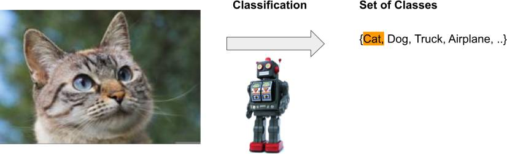
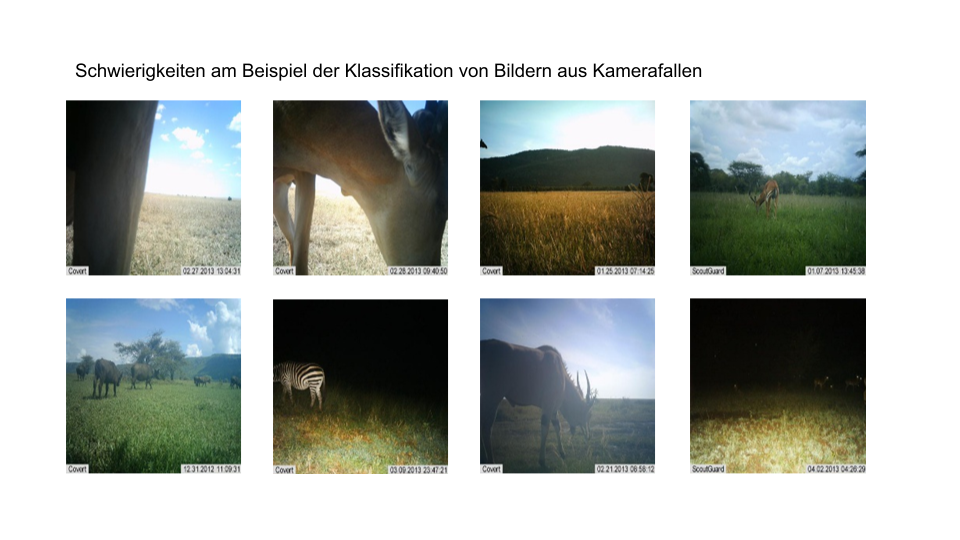
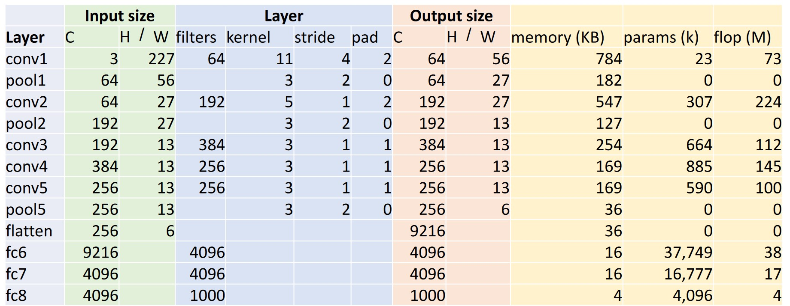
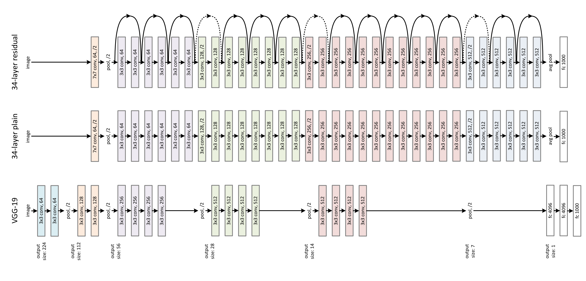
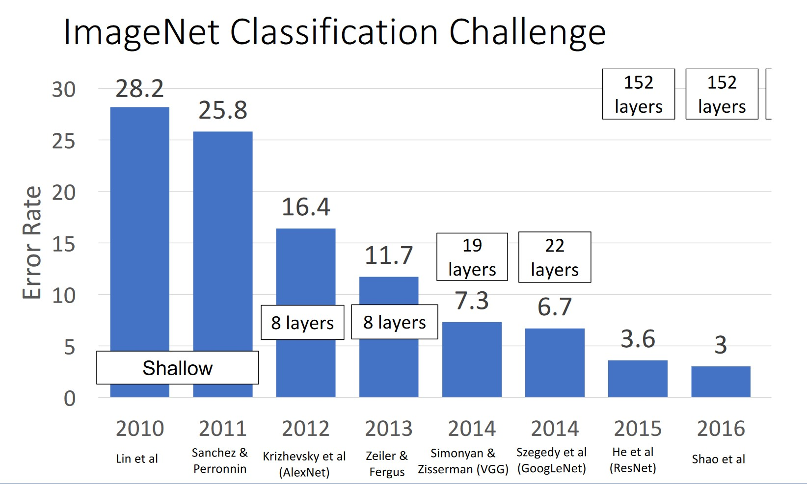
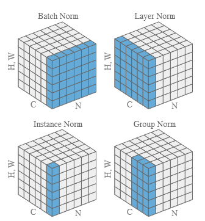

5 - Image Classification
Introduction
Image classification is a core task of Computer Vision. In image classification, an image is assigned to a predefined set of classes. In multi-class classification, there are ≥ 2 classes; in binary classification, there are 2 classes; and in multi-label classification, there are several sets of classes. Figure 1 illustrates the problem in multi-class classification.

Figure 2 shows an example from the paper by Krizhevsky, Sutskever, and Hinton (2012), which achieved the best results in the 2012 ImageNet competition, demonstrating how well CNNs work.

Figure 3 illustrates the challenge with images taken by camera traps, which need to be classified along animal species.

Parametric Approach
In a parametric approach, we seek a model of the following form:
\[ \hat{y}^{(i)} = f(\theta, \mathbf{x}^{(i)}) \]
We want to find model parameters \(\theta\) that output a score/prediction \(\hat{y}^{(i)}\) for any data points \(\mathbf{x}^{(i)}\) for each class \(k \in K\). We then want to assess how good this score is with the help of a loss function.
Softmax Classifier
With a Softmax Classifier, we interpret model predictions/scores as probabilities of class memberships: \(P(Y=\mathbf{y}^{(i)}| X = \mathbf{x}^{(i)})\). We interpret the output as a Categorical Distribution over all possible classes.
To obtain a valid probability distribution, the untransformed outputs \(\mathbf{z}\), also called logits, of a model are transformed with the softmax function \(\sigma(\mathbf{z})\):
\[ P(Y = k| X = \mathbf{x}^{(i)}) = \sigma(\mathbf{z})_k = \frac{e^{z_k}}{\sum_i^K e^{z_i}} \]
Figure 4 shows an example of the effect of the softmax transformation.
Loss Function
Now we look at how to define the loss function \(L(\mathbf{X}, \mathbf{y}, \theta)\) for a multi-class classification problem.
Likelihood
The likelihood of a data point \((\mathbf{x}^{(i)}, y^{(i)})\) is the probability of observing/realizing a data point, given a model with certain parameters:
\[ P(Y=y^{(i)}| X = \mathbf{x}^{(i)}) = f(\theta, \mathbf{x}^{(i)}) \]
This means we formulate a model with a probabilistic interpretation of predictions: \(f(\theta, \mathbf{x}^{(i)}): \mathbb{R}^{n} \mapsto [0, 1]\)
For a multi-class classification, the label vector is one-hot encoded \(\mathbf{y}^{(i)} \in \{0, 1\}^K\), where the true class is coded with 1 and the rest with 0. The likelihood of a data point is defined as:
\[ \prod_{j=1}^K P(Y = j| X = \mathbf{x}^{(i)})^{y^{(i)}_j} \]
Since only one entry in \(\mathbf{y}^{(i)}\) is 1, the likelihood is simply the prediction for the true class \(P(Y = y^{(i)}| X = \mathbf{x}^{(i)})\).
Given \(\mathbf{y} = [0, 1, 0, 1, 1]\) and the following \(\hat{\mathbf{y}}\), calculate the likelihood.
For \(\hat{\mathbf{y}} = [0.1, 0.8, 0.2, 0.7, 0.9]\):
NoteClick for result
y_pred = np.array([0.1, 0.8, 0.2, 0.7, 0.9])
display_likelihood(y_true, y_pred)Total Likelihood: 0.362880Does it get larger for \(\hat{\mathbf{y}} = [0.1, 0.9, 0.2, 0.7, 0.9]\)?
NoteClick for result
y_pred = np.array([0.1, 0.9, 0.2, 0.7, 0.9])
display_likelihood(y_true, y_pred)Total Likelihood: 0.408240What happens if we increase the dataset by copying the vector 10 times? \(\hat{\mathbf{y}} = [0.1, 0.8, 0.2, 0.7, 0.9, 0.1, 0.8, ...]\)?
NoteClick for result
y_pred = np.array([0.1, 0.8, 0.2, 0.7, 0.9])
y_true = np.repeat(y_true, 10, axis=0)
y_pred = np.repeat(y_pred, 10, axis=0)
display_likelihood(y_true, y_pred)Total Likelihood: 0.000040Maximum Likelihood
The likelihood \(P(\mathbf{y} | \theta, \mathbf{X})\) of observing our entire dataset \((\mathbf{X}, \mathbf{y})\), given the parameters \(\theta\) and assuming that the data points \((\mathbf{x}^{(i)}, y^{(i)})\) are independent and identically distributed, can be calculated as:
\[\begin{equation} \prod_{i=1}^N \prod_{j=1}^K P(Y = j| X = \mathbf{x}^{(i)})^{y^{(i)}_j} \end{equation}\]
Under the Maximum Likelihood approach, we seek the parameters \(\theta\) that maximize the likelihood of observing the dataset.
Negative Log-Likelihood
With Maximum Likelihood, we aim to choose the parameters \(\theta\) such that \(p(\mathbf{y} | \theta, \mathbf{X})\) is maximized. However, this function can be complex to handle, and we can use some mathematical tricks. We take the logarithm of the likelihood so that the product of probabilities becomes a sum. Since the logarithm is a monotonically increasing function, we can maximize its logarithm instead of the function \(p(\mathbf{y} | \theta, \mathbf{X})\). Finally, we take the negative of the function, allowing us to minimize it.
\[\begin{equation} L(\mathbf{X}, \mathbf{y}, \theta) = - \log \prod_{i=1}^N \prod_{j=1}^K P(Y = j| X = \mathbf{x}^{(i)})^{y^{(i)}_j} \\ L(\mathbf{X}, \mathbf{y}, \theta) = -\sum_{i=1}^N \sum_{j=1}^K y^{(i)}_j \log P(Y = j| X = \mathbf{x}^{(i)}) \end{equation}\]
Cross-Entropy
The loss function, derived with Maximum Likelihood, can also be viewed through the lens of cross-entropy between two discrete probability functions. Specifically, we can calculate and minimize the cross-entropy between the true distribution \(\mathbf{y}^{(i)}\) and the predicted \(\mathbf{\hat{y}}^{(i)}\). Cross-entropy comes from information theory and measures how many bits/nats on average are needed to describe an event of a probability distribution \(p(x)\) when using the approximation \(q(x)\).
\[\begin{equation} CE = - \sum_{x \in X} p(x) \log q(x) \\ CE = - \sum_{i=1}^N \sum_{j=1}^K y_j^{(i)} \log \hat{y}_j^{(i)} \end{equation}\]
It is evident that cross-entropy is identical to the negative log-likelihood.

Figure 5 shows an example with a cross-entropy value of: 0.266.
Architectures
Architecture refers to the complete definition of an untrained (deep-learning) model, i.e., the sequence and configuration of layers. The following are some important architectures that have been successfully used for image classification.
AlexNet
CNNs became extremely popular after winning the ImageNet Competition. Krizhevsky, Sutskever, and Hinton (2012) implemented a CNN with multiple layers, known as the AlexNet architecture, as shown in Figure 6. ImageNet is a large, hierarchical image dataset Deng et al. (2009), which enabled efficient training of CNNs for the first time.
AlexNet consists of 5 convolutional layers and 3 fully-connected layers. The last layer is a 1000-way softmax output to model the classes in ImageNet.
The model was trained with two GPUs (GTX 580) with 3GB memory each. Since 3GB was insufficient to train the model, the architecture was split across the GPUs. Some layers were split between the GPUs, allowing a larger network to be trained.
Figure 6 shows the detailed architecture, including kernel sizes, the number of filters per layer, activation map dimensions, and pooling layers. ReLU was used as the activation function. This representation is from the original paper and shows how the model was split across two GPUs.

Since the split across two GPUs is no longer necessary, the architecture is somewhat simplified. Modern implementations are shown in Figure 7.

Figure 8 presents the operations in AlexNet in tabular form.

We can also easily load AlexNet via torchvision.
import torch
import torchvision.models as models
import torchinfo
alexnet = models.alexnet()
x = torch.zeros(1, 3, 224, 224, dtype=torch.float, requires_grad=False)
yhat = alexnet(x)
print(torchinfo.summary(alexnet, input_size=(1, 3, 224, 224)))==========================================================================================
Layer (type:depth-idx) Output Shape Param #
==========================================================================================
AlexNet [1, 1000] --
├─Sequential: 1-1 [1, 256, 6, 6] --
│ └─Conv2d: 2-1 [1, 64, 55, 55] 23,296
│ └─ReLU: 2-2 [1, 64, 55, 55] --
│ └─MaxPool2d: 2-3 [1, 64, 27, 27] --
│ └─Conv2d: 2-4 [1, 192, 27, 27] 307,392
│ └─ReLU: 2-5 [1, 192, 27, 27] --
│ └─MaxPool2d: 2-6 [1, 192, 13, 13] --
│ └─Conv2d: 2-7 [1, 384, 13, 13] 663,936
│ └─ReLU: 2-8 [1, 384, 13, 13] --
│ └─Conv2d: 2-9 [1, 256, 13, 13] 884,992
│ └─ReLU: 2-10 [1, 256, 13, 13] --
│ └─Conv2d: 2-11 [1, 256, 13, 13] 590,080
│ └─ReLU: 2-12 [1, 256, 13, 13] --
│ └─MaxPool2d: 2-13 [1, 256, 6, 6] --
├─AdaptiveAvgPool2d: 1-2 [1, 256, 6, 6] --
├─Sequential: 1-3 [1, 1000] --
│ └─Dropout: 2-14 [1, 9216] --
│ └─Linear: 2-15 [1, 4096] 37,752,832
│ └─ReLU: 2-16 [1, 4096] --
│ └─Dropout: 2-17 [1, 4096] --
│ └─Linear: 2-18 [1, 4096] 16,781,312
│ └─ReLU: 2-19 [1, 4096] --
│ └─Linear: 2-20 [1, 1000] 4,097,000
==========================================================================================
Total params: 61,100,840
Trainable params: 61,100,840
Non-trainable params: 0
Total mult-adds (Units.MEGABYTES): 714.68
==========================================================================================
Input size (MB): 0.60
Forward/backward pass size (MB): 3.95
Params size (MB): 244.40
Estimated Total Size (MB): 248.96
==========================================================================================VGG
Simonyan and Zisserman (2015) won the ImageNet Challenge in 2014 with their VGG architecture. They showed that smaller 3x3 kernels work significantly better and that deeper networks with 16-19 layers can be trained. Figure 9 shows the architecture as presented in the original paper. Figure 10 visualizes the architecture.


VGG introduced a popular design element: A layer has the same number of filters as the previous layer unless the activation map dimensions are halved, in which case the number of filters is doubled (see also Figure 10). This was done to maintain the time complexity of the layers. VGG does not use normalization layers.
Figure 11 compares VGG with AlexNet.

ResNet
He et al. (2016) wondered whether CNNs could be improved simply by making them deeper, i.e., adding more layers. Their experiments showed that adding layers eventually stops being beneficial, and performance saturates and then rapidly degrades (see Figure 12). They noticed that the performance did not degrade due to overfitting (see Figure 13, which shows that training error is also poor), but because back-propagation becomes less effective and the weights do not optimize well. He et al. (2016) hypothesized that deeper networks could not perform worse than shallower ones because the additional layers could simply pass on activations unchanged.


They then hypothesized that passing on activations unchanged as a default behavior could avoid this problem. They introduced identity mappings. Figure 14 shows such a connection. These connections are also called residual connections because the network only needs to learn the change in activations from layer \(i\) to layer \(i+1\), the residue.
ResNet was otherwise inspired by VGG16. The convolutional layers consist of 3x3 kernels (except the first one), and the number of filters is doubled when the activation map dimensions are halved. ResNet uses convolutions with stride 2 for down-sampling and no max pooling. At the end, ResNet uses a global average pooling layer followed by a fully-connected layer with the number of classes. Variants of ResNet have 18, 34, 50, and over 100 layers. ResNet also uses batch normalization. Figure 15 shows the architecture.

ResNet is very popular and is still widely used today (there are now more modern variants). Recent studies of identity mappings (or more generally skip connections) have shown that the gradient surface of the loss function becomes smoother, allowing the network to be optimized better. This is impressively illustrated in Figure 16.

ConvNext
One of the most modern CNN architectures was described in Liu et al. (2022). This architecture uses tricks and implementation ideas accumulated over decades from various architectures. Figure 17 shows, starting from a modern version of ResNet, what has been adjusted to define this state-of-the-art architecture. Examples include: larger kernels, different activation functions, layer normalization instead of batch normalization, and depthwise separable convolutions.

There is already a new version of this architecture Woo et al. (2023).
ImageNet Performance
Figure 18 shows the development of ImageNet performance. As of 2023, we are much closer to 100%, see Link.

Which Architecture?
Which architecture should be chosen for a specific problem? A common tip is: Don’t be a hero.
One should rely on off-the-shelf architectures and not implement their own without a good reason.
Typically, ResNet-50 or ResNet-101 are good choices. However, there are also models that require significantly fewer parameters, such as Efficient Nets.
Important considerations are also the requirements regarding accuracy, performance (FLOPs), and model size (memory).
Further Variations
There are countless other architectures and especially specific layers or layer blocks that can be used in various architectures. The following are Squeeze/Excite Networks and the important class of normalization layers, which are often used and can significantly improve models or accelerate the optimization process.
Squeeze/Excite Networks
Squeeze-and-Excite Networks (SE-Networks) were introduced in 2019 Hu et al. (2019). These include so-called Squeeze and Excite blocks (SE blocks), which allow the scaling of activation maps of a layer. This scaling is learnable through a few additional parameters. In practice, significant performance gains have been observed. Figure 19 shows an illustration.

These SE blocks can be easily applied to arbitrary activation maps. Figure 19 shows an input feature map \(\mathbf{\mathsf{X}} \in \mathbb{R}^{H' \times W' \times C'}\) that is transformed with \(F_{tr}\) (e.g., with a convolutional layer). This results in the activation maps \(\mathbf{\mathsf{U}} \in \mathbb{R}^{H \times W \times C}\).
The transformation \(F_{sq}(\cdot)\) applies the squeeze operation, a global average pooling, to generate a description of each channel by aggregating spatial information of the activation map \(\mathbf{\mathsf{U}}\). This results in a vector \(z \in \mathbb{R}^{1 \times 1 \times C}\).
The excitation operation \(F_{ex}(\cdot, W)\) uses a gating mechanism with parameters \(W\), implemented with two fully-connected layers and activation functions. The result is \(s \in \mathbb{R}^{1 \times 1 \times C}\), the channel weights. It is called gating because the weights range from \([0, 1]\) and thus control how much information of a channel flows through (gatekeeping).
Finally, \(F_{scale}(\cdot)\) scales the activation maps \(\mathbf{\mathsf{U}}\) with the channel weights.
The operation can be described as follows:
\[\begin{equation} U = F_{tr}(X) \\ z = F_{sq}(U) = \text{GlobalAvgPool}(U) \\ s = F_{ex}(z, W) = \sigma(\mathbf{W}_2 g(\mathbf{W}_1 z)) \\ \hat{X} = F_{scale}(U, s) = U \odot s \end{equation}\]
where \(g()\) represents the ReLU function, and \(\sigma\) represents the sigmoid function.
Normalization Layers
Normalization layers normalize activation maps to improve parameter learning. There are many variations, as shown in Figure 20. In modern architectures, normalization layers are typically used. Popular is, for example, layer normalization (see Ba, Kiros, and Hinton (2016)). The general form of normalization is given in equation Equation 1. The parameters \(\gamma\) and \(\beta\) are learned, while the means \(E[x]\) and variances \(\sigma^2[x]\) are estimated from the activations. Why normalization layers work and which ones to prefer are still subjects of research and are often empirically tested in practice (considered as hyper-parameters). It is believed that the cost function becomes smoother overall, allowing the network to train faster and better Santurkar et al. (2019).
\[ y = \frac{x - E[x]}{\sqrt{\sigma^2[x] + \epsilon}} * \gamma + \beta \tag{1}\]

Pre-Processing
Typically, images are pre-processed before being processed by the CNN. This is done to make the optimization process converge faster. Common steps include:
- Resizing/cropping to a fixed size, e.g., 224x224x3. This is necessary for the images to be processed in a batch (they must have the same dimensions).
- Scaling: Images are scaled from the interval [0, 255] to the interval [0, 1].
- Normalization: Normalization is often done along the color channels so that the mean value of the pixel values is 0.
In torchvision, the following pre-processing steps are used: Link
Transfer Learning
Transfer Learning refers to the process of adapting a trained model for Task A to Task B. Adapting pre-trained models often leads to better results and also reduces the number of training iterations. Deep learning frameworks often provide easy access to such models (also known as Model Zoo). For example, from PyTorch: https://pytorch.org/vision/stable/models.html.
from torchvision.models import resnet50, ResNet50_Weights
resnet50(weights=ResNet50_Weights.IMAGENET1K_V2)PyTorch Example
Architecture
Example of a CNN architecture.
import torch
import torch.nn as nn
import torch.nn.functional as F
class Net(nn.Module):
def __init__(self):
super().__init__()
self.conv1 = nn.Conv2d(3, 6, 5)
self.pool = nn.MaxPool2d(2, 2)
self.conv2 = nn.Conv2d(6, 16, 5)
self.fc1 = nn.Linear(16 * 5 * 5, 120)
self.fc2 = nn.Linear(120, 84)
self.fc3 = nn.Linear(84, 10)
def forward(self, x):
x = self.pool(F.relu(self.conv1(x)))
x = self.pool(F.relu(self.conv2(x)))
x = torch.flatten(x, 1)
x = F.relu(self.fc1(x))
x = F.relu(self.fc2(x))
x = self.fc3(x)
return x
net = Net()Loss Function
import torch.optim as optim
criterion = nn.CrossEntropyLoss()
optimizer = optim.SGD(net.parameters(), lr=0.001, momentum=0.9)References
Ba, Jimmy Lei, Jamie Ryan Kiros, and Geoffrey E. Hinton. 2016. “Layer Normalization.” arXiv. http://arxiv.org/abs/1607.06450.
Deng, Jia, Wei Dong, Richard Socher, Li-Jia Li, Kai Li, and Li Fei-Fei. 2009. “ImageNet: A Large-Scale Hierarchical Image Database.” In 2009 IEEE Conference on Computer Vision and Pattern Recognition, 248–55. Miami, FL: IEEE. https://doi.org/10.1109/CVPR.2009.5206848.
He, Kaiming, Xiangyu Zhang, Shaoqing Ren, and Jian Sun. 2016. “Deep Residual Learning for Image Recognition.” In 2016 IEEE Conference on Computer Vision and Pattern Recognition (CVPR), 770–78. IEEE. https://doi.org/10.1109/CVPR.2016.90.
Hu, Jie, Li Shen, Samuel Albanie, Gang Sun, and Enhua Wu. 2019. “Squeeze-and-Excitation Networks.” arXiv. http://arxiv.org/abs/1709.01507.
Johnson, Justin. 2019. “EECS 498-007 / 598-005: Deep Learning for Computer Vision.” Lecture {Notes} / {Slides}. https://web.eecs.umich.edu/~justincj/teaching/eecs498/FA2019/.
Krizhevsky, Alex, Ilya Sutskever, and Geoffrey E Hinton. 2012. “ImageNet Classification with Deep Convolutional Neural Networks.” In Advances in Neural Information Processing Systems, edited by F. Pereira, C. J. Burges, L. Bottou, and K. Q. Weinberger. Vol. 25. Curran Associates, Inc. https://proceedings.neurips.cc/paper/2012/file/c399862d3b9d6b76c8436e924a68c45b-Paper.pdf.
Li, Hao, Zheng Xu, Gavin Taylor, Christoph Studer, and Tom Goldstein. 2018. “Visualizing the Loss Landscape of Neural Nets.” arXiv. http://arxiv.org/abs/1712.09913.
Liu, Zhuang, Hanzi Mao, Chao-Yuan Wu, Christoph Feichtenhofer, Trevor Darrell, and Saining Xie. 2022. “A ConvNet for the 2020s.” arXiv. http://arxiv.org/abs/2201.03545.
Prince, Simon J. D. 2023. Understanding Deep Learning. MIT Press. https://udlbook.github.io/udlbook/.
Qiao, Siyuan, Huiyu Wang, Chenxi Liu, Wei Shen, and Alan Yuille. 2020. “Micro-Batch Training with Batch-Channel Normalization and Weight Standardization.” arXiv. http://arxiv.org/abs/1903.10520.
Santurkar, Shibani, Dimitris Tsipras, Andrew Ilyas, and Aleksander Madry. 2019. “How Does Batch Normalization Help Optimization?” arXiv. http://arxiv.org/abs/1805.11604.
Simonyan, Karen, and Andrew Zisserman. 2015. “Very Deep Convolutional Networks for Large-Scale Image Recognition.” arXiv. http://arxiv.org/abs/1409.1556.
Woo, Sanghyun, Shoubhik Debnath, Ronghang Hu, Xinlei Chen, Zhuang Liu, In So Kweon, and Saining Xie. 2023. “ConvNeXt V2: Co-Designing and Scaling ConvNets with Masked Autoencoders.” arXiv. http://arxiv.org/abs/2301.00808.